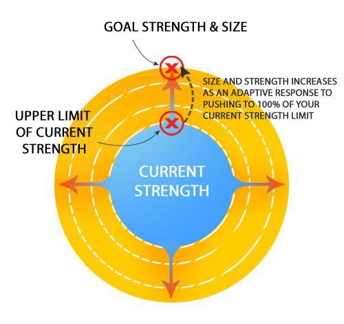

INTENSITY: HOW HARD YOU NEED TO TRAIN
THT is a high intensity training plan. There is a point in a set where the body's ‘Growth Mechanism’ is activated; stop before this point and NO muscular growth is stimulated. You can liken this to a switch that’s flipped when you cross a certain threshold of pressure. This point is also sometimes called 'Overload'.
The necessary stimulation to force
adaptation (growth) occurs in the last rep(s) of a set.
In order to force the body into making your muscle fibers thicker, you need to give it a damn good reason! Training WITHIN your existing strength levels does NOTHING to achieve this.
Let’s put it simply: If you know you can get a maximum of 12 reps on a given set and you stop at 10 or lower, you did little or NOTHING to stimulate a size and strength increase because you merely trained WITHIN your existing strength level.

Stopping a few reps before failure is training WITHIN the blue circle to the right. It is only by hitting the outer edge that your set was of sufficient INTENSITY to force the body to adapt and grow bigger.
In order to grow bigger and stronger, you need that blue circle to continually expand larger and larger. This means training to 100% intensity i.e. muscular failure.
What do I mean by “failure”?
That point in a set where you cannot possibly
complete another lifting part of the repetition unassisted.
Any program (and there are a lot of them) that has you stopping before failure is inefficient for stimulating muscle growth.
Furthermore, any program that has you lifting the same weight in every set (like 5x5 programs and so on) is also NOT going to produce growth at anywhere near maximal levels. Read this article debuking 5x5 workouts for size gains.